📱 スマホで写真をとる人の説明書
SEAM 商品登録 — バーコードを読んで、商品の写真を5枚とるだけ
はじめての人・1日だけのアルバイトさんでも、これを読めばできます
0この仕事はなに？
お店（ディーラー）の商品を、ネットのお店（EC サイト）にのせるための写真をとる仕事です。あなたがとった写真が、そのままネットのお店に出ます。
写真は「同じ大きさ・同じ向き・白い背景」がルールアプリに点線の枠が出るので、枠に合わせて撮れば自動でそろいます。うまく撮れているかも自動でチェックします。
1はじめる前に用意するもの
- スマホ（iPhone でも Android でも OK）。充電は満タンに。
- 白い紙 か 白い布を机にしく（背景が白いほど、きれいに仕上がります）。
- 明るい場所。窓のそばか、ライトの下。暗いと「暗い」の注意が出ます。
- ログインする ID とパスワード（お店の人からもらいます。みんな同じ ID です）。
- 自分の名前（担当者名）。だれが撮ったかを記録するために使います。
アプリの開き方
- スマホのブラウザ（Safari か Chrome）で https://seam.site/pim/ を開く。
LINE で届いたリンクをそのまま開くとカメラが使えません。画面の上に赤い案内が出るので「Safari / Chrome で開く」をおしてください（または LINE の右上「…」→「Safari で開く」）。
- 最初に「カメラを使ってもいいですか？」と聞かれたら 「許可」 をおす。（許可しないとバーコードが読めません）
- 画面に「ホーム画面に追加」の案内が出たら、追加しておくと次から1タップで開けます。
iPhone は下の 共有ボタン（□↑）→ ホーム画面に追加。
2ログインして、自分の名前をえらぶ
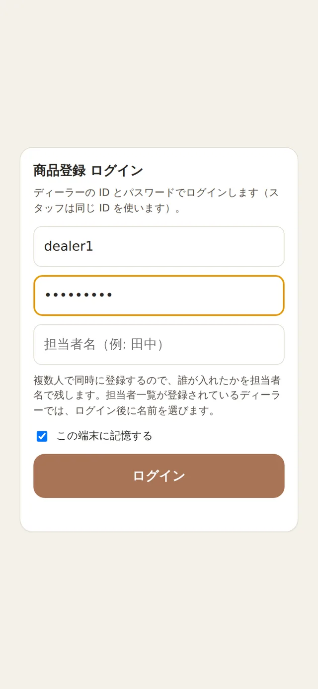
① ID とパスワードを入れて「ログイン」
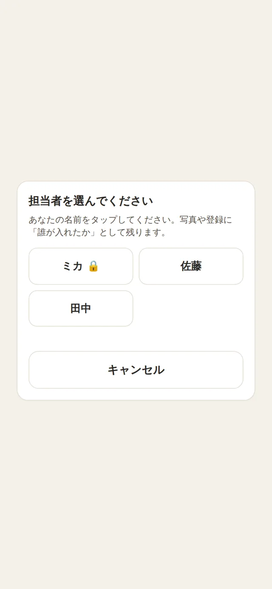
② 自分の名前をタップ
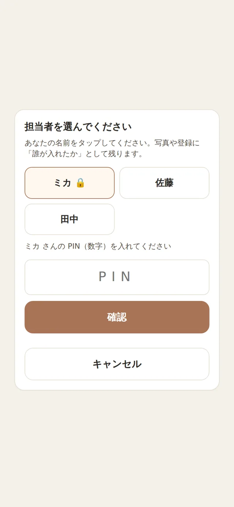
③ 🔒 の人は PIN（数字）を入れる
- ID と パスワード を入れて ログイン。「この端末に記憶する」に✓があれば、次からは入れなくて OK。
- 名前の一覧が出たら、自分の名前をタップ。名前に 🔒 がついている人は PIN（4〜6 けたの数字） を入れます。
- 名前の一覧が出ない場合は、「担当者名」の欄に自分の名前を入れます。毎回同じ書き方で（「田中」と「たなか」は別人になってしまいます）。
自分の名前が一覧にないときお店の人（PC を使う人）に「担当者一覧に名前を入れてください」とたのんでください。名前がないと登録できません。
3商品をよび出す（バーコードを読む）
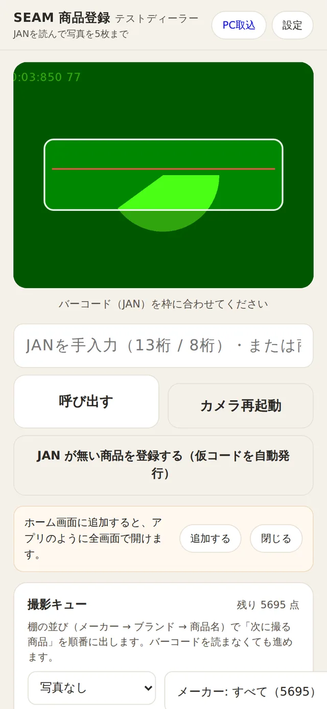
カメラの白い枠にバーコードを入れる
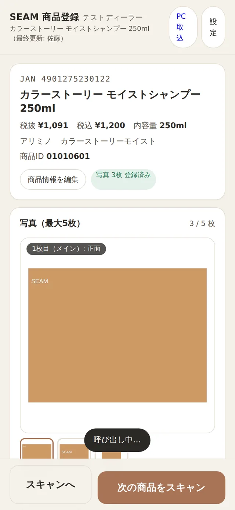
「ピッ」と鳴って商品が出る
- 商品のバーコード（JAN・数字が13けた）をさがす。だいたい箱やボトルの裏にあります。
- スマホの画面の白い枠にバーコードを入れる。10〜20cm はなして、ピントが合うまで少し待つ。
- 「ピッ」と鳴って、商品の名前と写真の枠が出れば OK。
- 読めないときは、下の欄に数字を13けた手で入れて 呼び出す。商品名でも検索できます。
「未登録の商品です」と出たらまだ名前が入っていない商品です。商品名だけ入れて「登録して写真へ」をおせば、そのまま写真がとれます（→ 7 章）。
4写真を5枚とる
枠は 5 つ。1枚目＝正面、2枚目＝うら、3枚目＝ななめ、4枚目＝キャップや口元、5枚目＝手に持って大きさ。光っている枠が「次にとる枠」です。
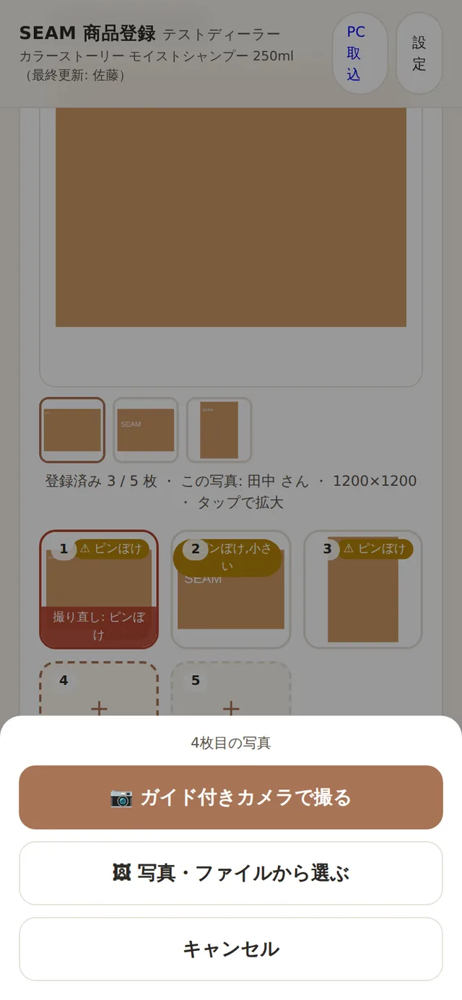
① 光っている枠をタップ → 「ガイド付きカメラで撮る」
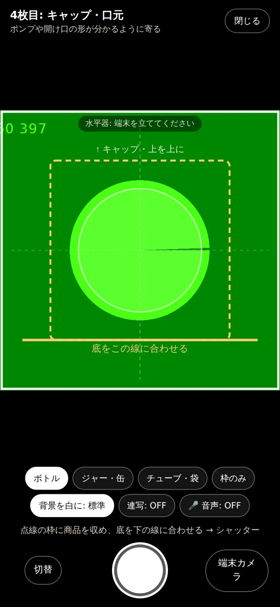
② 点線の枠に商品を入れて、底を線に合わせる
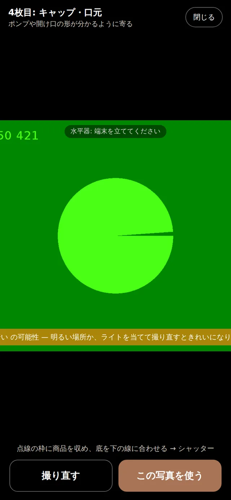
③ 「この写真を使う」で保存。次の枠が光る
- 光っている枠をタップ → 📷 ガイド付きカメラで撮る。
- 商品を点線の枠の中に入れ、底をオレンジの線に合わせる。キャップは上。上の「水平 OK」が緑になるように、スマホをまっすぐ立てる。
- 白い丸のシャッターをおす。
- 写真を見て、よければ この写真を使う。ぼやけていたら 撮り直す。
- 自動で次の枠が光るので、2枚目・3枚目…と同じように。5枚そろえば完了です。
カメラ画面のボタン
| ボタン | なに？ |
|---|
| ボトル／ジャー・缶／チューブ・袋 | 商品の形に合わせたうすい絵が出ます。目安なので、ぴったりでなくて OK。 |
| 背景を白に: 標準 | 白い紙の色むらを自動で真っ白にします。ふつうは「標準」のまま。 |
| 連写: ON | シャッターをおすと 1秒で自動保存 → 次の枠。慣れたらこれが速いです。注意が出たときだけ止まります。 |
| 🎤 音声 | 「つぎ」と言うと撮影、「とりなおし」で撮り直し（Android の Chrome で使えます）。 |
| 端末カメラ | スマホのふつうのカメラで撮る。とった写真は自動で正方形・白背景にそろえます。 |
| 写真・ファイルから選ぶ | もう撮ってある写真を入れるとき。 |
ダメな写真暗い・ぼやけている・商品が枠からはみ出ている・手や影が写りこんでいる・背景に物がある。自動チェックで「暗い」「ピンぼけ」「小さい」と出たら、撮り直すをえらびましょう。
5とった写真をなおす・ならべかえる
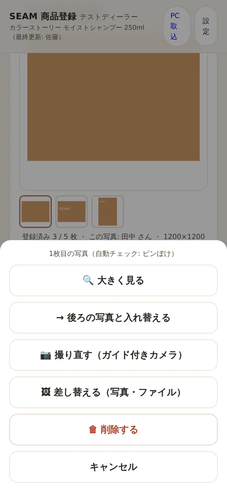
写真のある枠をタップすると、このメニュー
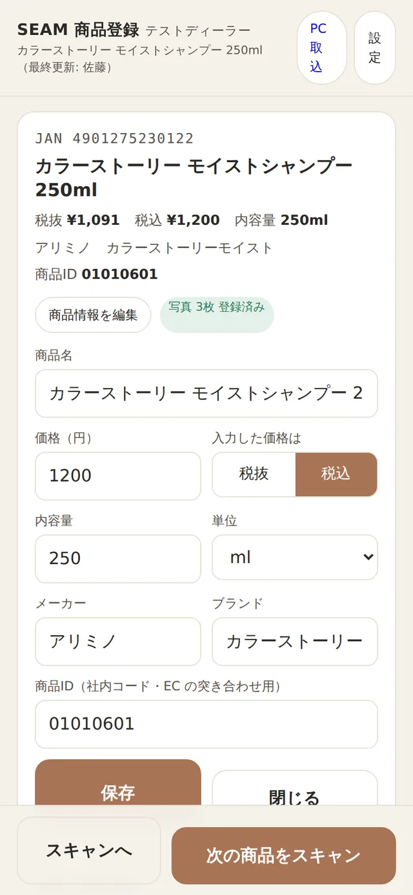
「商品情報を編集」で名前や値段もなおせます
| やりたいこと | やり方 |
|---|
| 撮り直したい | その写真をタップ → 撮り直す。前の写真は自動で消えます。 |
| この写真をメイン（1枚目）にしたい | その写真をタップ → ⭐ 1枚目（メイン）にする。 |
| 順番を入れかえたい | その写真をタップ → ← 前の写真と入れ替える / → 後ろの写真と入れ替える。 |
| 消したい | その写真をタップ → 🗑 削除する。後ろの写真が前につまります。 |
| 大きく見たい | 上の大きい写真をタップ。下の小さい写真で切りかえ。 |
| 赤い枠の写真がある | PC の人が「撮り直し」にした写真です。理由が書いてあるので、その通りに撮り直してください。 |
6次の商品へ（撮影キュー）
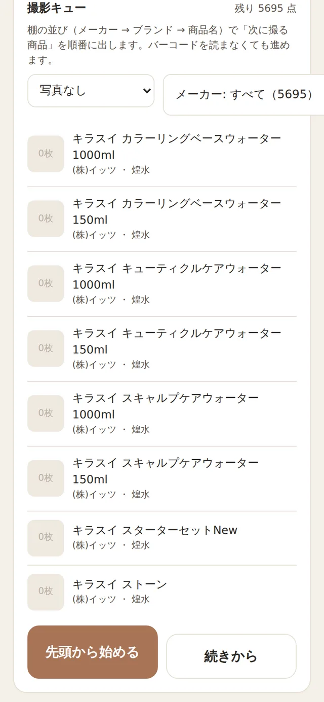
スキャン画面の「撮影キュー」
バーコードを読まなくても、「次にとる商品」を順番に出してくれるのが撮影キューです。棚のならび（メーカー → ブランド → 商品名）で出ます。
- スキャン画面の 撮影キュー で、メーカーをえらぶ（分担するときは自分のメーカー）。
- 先頭から始める をおすと商品が開く。写真を5枚とる。
- 下の 次の商品へ → で次の商品。これをくり返すだけ。
- 休けいから戻ったら 続きから。
だれかが同じ商品を開いていたら「〇〇さんもこの商品を開いています」と出ます。その商品はキューから 10 分間外れるので、ほかの人とかぶりません。
7新しい商品・JAN が無い商品
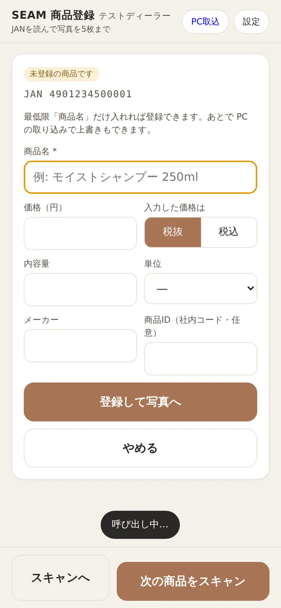
商品名だけ入れれば登録できます
- バーコードを読んだのに「未登録」と出た → 商品名（できれば値段・メーカーも）を入れて 登録して写真へ。
- バーコードが無い商品 → スキャン画面の JAN が無い商品を登録する（仮コードを自動発行）。商品名を入れると、仮のバーコード番号（20 で始まる）が自動でつきます。PC の人がシールを印刷して商品に貼れば、次からはふつうに読めます。
商品名は正しく商品に書いてある名前をそのまま。内容量（250ml など）も名前に入れると、あとで見つけやすいです。
商品コード（商品ID）も入れるネットのお店と商品をつなぐ番号です。お店の商品表にある「商品コード」を、新しい商品の登録や「商品情報を編集」で入れてください。入っていない商品は、商品画面に赤く「商品コード 未入力」と出ます。
8電波が切れた・こまったとき
| こまった | どうする |
|---|
| カメラが真っ暗・動かない | 「カメラ再起動」をおす。それでもダメなら、ブラウザの設定で seam.site のカメラを「許可」にする。 |
| バーコードが読めない | 10〜20cm はなす／明るくする／角度を変える。ダメなら数字を手で入れる。 |
| 写真を送ったのに「送信待ち」のまま | 電波のある場所に行けば自動で送られます（上の「送信待ち N」が消えれば OK）。 |
| 「〇〇さんが先に更新しました」 | ほかの人が同じ商品をなおしました。画面が最新になるので、見てからもう一度。 |
| 「担当者名が登録されていません」 | 設定 → 担当者を選ぶ で、自分の名前をえらび直す。名前がないときはお店の人にたのむ。 |
| 「ログインし直してください」 | パスワードが変わったか、期限切れ。お店の人に新しいパスワードを聞いてログイン。 |
| 5枚を超えて入れたい | 写真は 5 枚まで。いらない写真を削除してから。 |
| まちがった商品に写真を入れた | その写真をタップ → 削除。そのあと正しい商品を読んで撮り直す。「同じ写真が別の商品にも」と出たら、まちがいのサインです。 |
それでもわからないときお店の PC 担当の人に「JAN の番号」と「何をしたか」を伝えてください。壊れることはないので、安心して聞いてください。
9やってはいけないこと
- ❌ 他の人の名前をえらばない。だれが撮ったかの記録がくるいます。
- ❌ パスワードを人に教えない・メモを置きっぱなしにしない。
- ❌ 手や影が写った写真をそのまま使わない。撮り直しは何回でも OK。
- ❌ 「削除する」を軽くおさない。消した写真は戻りません（もう一度撮ればだいじょうぶ）。
101日の流れチェックリスト
- 白い紙をしいて、明るい場所に机をセットした
- アプリを開いて、ログインした（前の日の記憶が残っていればそのまま）
- 自分の名前になっているか、右上「設定」で確認した
- 撮影キューで自分のメーカーをえらんだ（分担があるとき）
- 1商品ずつ：正面 → うら → ななめ → 口元 → 大きさ の5枚
- 「暗い」「ピンぼけ」が出たら撮り直した
- 赤い枠（撮り直し）が来ていたら、先にそれを撮り直した
- 帰る前：上に「送信待ち」が出ていないことを確認した
- 帰る前：右上「設定」→ 今日の枚数をお店の人に伝えた（PC の進捗にも出ます）